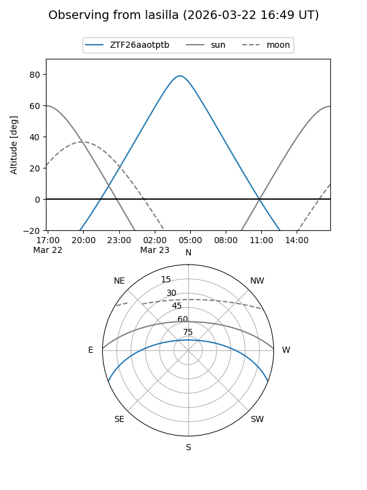
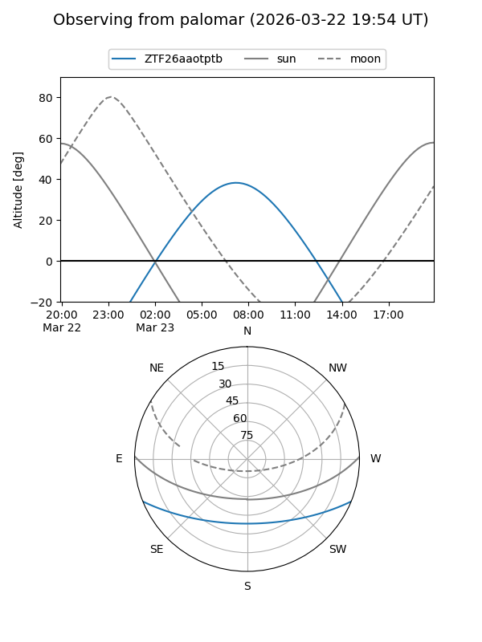

ZTF26aaotptb
Target ZTF26aaotptb at 2026-03-23 08:13
Aliases and brokers:
FINK: link
Lasair: link
ALeRCE: link
alt names
ZTF26aaotptb (ztf,fink_ztf)
Coordinates:
equatorial (ra, dec) = 171.6546,-18.25121
equatorial (HMS+DMS) = 11:26:37.10,-18:15:04.34
galactic (l, b) = (276.2139,+40.17927)
Flags:
Photometry:
last ztfg=17.70
1 ztfg detections
Lightcurve
Visibility


Additional plots